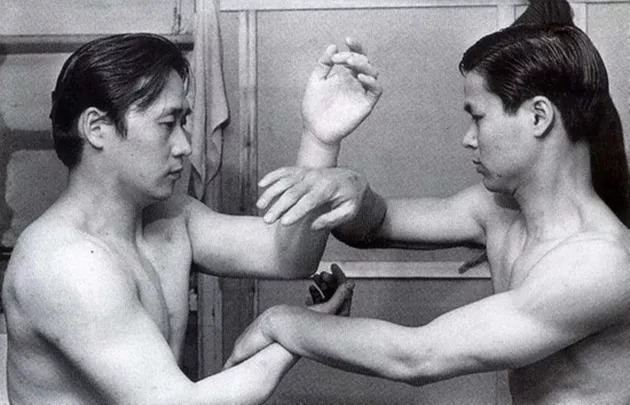

Entrevista com Mestre Greco Wong
Greco Wong Wai Chung: O Pioneiro não comentado do Wing Chun no Reino Unido
A entrevista a seguir é uma parte da entrevista do Mestre Greco Wong, realizada pela revista Wing Chun Illustrated, Números: 1, 2 e 3; lançada em 2011. Entrevista Realizada por Rolf Clausnitzer. A tradução para o português é de Thomas Pinheiro:
É possível confirmar que você foi o primeiro aluno sênior do Moy Yat? E o quanto de contato que você teve com ele?
Moy Yat, um outro cara chamado Chow Yat Loon (“o dragão”), e eu éramos amigos. Costumávamos sempre nos reunir, nós sempre conversávamos sobre artes marciais. Enquanto eu estava aprendendo Tai Chi, Moy Yat estava aprendendo Wing Chun de Yip Man e Chow Yat Loon estava aprendendo Pak Hok (garça branca) de Chan Hak Fu, um muito famoso mestre de Pak Hok em Hong Kong. Íamos nas casas uns dos outros para jogar, nos divertir, lembro que naquela época éramos apenas crianças.
As famílias dos dois conheciam minha família e todos nós estávamos muito interessados em artes marciais. Eu sempre quisera saber mais sobre artes marciais diferentes, então eu comecei a aprender Garça Branca de Chow. Mais tarde, Chow me falou para continuar meu aprendizado com seu sibak, Koon Boon Fu (outro muito famoso professor do estilo da Garça Branca em Hong Kong), assim, foi o que eu fiz.
Eu aprendi várias formas e aplicações de combate da Garça Branca, uma forma de espada, e uma forma de bastão. Enquanto eu estava explorando o estilo da Garça Branca, Moy Yat me disse que precisava de um parceiro para prática de seu Wing Chun. Ele também queria aplicar técnicas novas que ele havia aprendido de Yip Man em mim. Foi assim que comecei a aprender Wing Chun.
Como eu ia para praticar mais e mais Wing Chun, eu comecei a interessar-me mais do que o estilo da Garça Branca. Eu gostava de praticar chi sau com Moy Yat e queria aprender mais. E foi assim que eu vim a conhecer Mak Po. Moy Yat era um sihing (aluno mais velho) de Mak Po. Antes de Moy Yat abrir sua escola, Mak Po costumava ir a um lugar para praticar com Moy Yat, e eu normalmente também ia lá.
Desta forma que eu acabei praticando muito chi sau com Mak Po. Depois que Moy Yat abriu sua própria escola, Mak Po visitava e praticava muito lá também. Pelo lado do Wing Chun, Moy Yat e eu também éramos muito bons amigos. Costumávamos ir para a natação e churrascos ao ar livre, juntamente com outros colegas. Éramos grandes amigos. Foi ele quem sugeriu que eu deveria ir praticar na escola de Yip Man.
Quando Moy Yat abriu sua própria escola em Hong Kong, me tornei seu instrutor assistente lá. Mesmo depois que eu viajei para o Reino Unido, ainda mantínhamos contato por carta. Eu também procurei ter sua permissão para fornecer material para você (Rolf Clausnitzer) para a produção do primeiro livro de Wing Chun em idioma inglês em 1969. Quando o livro foi publicado, enviei uma cópia para meu sifu Moy Yat.
Esta é uma história fascinante. Você pode nos dizer um pouco mais sobre Mak Po, que tem uma reputação formidável, pelo que eu ouvi?
Mak Po foi Sihing de Moy Yat. Ambos aprenderam com Yip Man, ao mesmo tempo. Moy Yat costumava convidar-me para ir para o local onde praticava com Mak Po. Quando eu estava ensinando na escola de Moy Yat, Mak Po costumava visitar, e eu começava a praticar com ele. Na maioria das vezes, eu e os outros alunos estávamos fazendo chi sau com Mak Po. Depois que saí para estudar no Reino Unido, perdi contato com ele. Ouvi de meus alunos através de pesquisa na internet de que atualmente Mak Po vive em São Francisco. Eu não sei se ele ainda ensina Wing Chun. Eu adoraria voltar a ter contato com ele. Eu acho que ele ainda lembra de mim. Se você perguntasse a ele sobre "Ah Chun". Mudando de assunto ...
Tenho certeza que todos os leitores vão querer saber sobre suas memórias pessoais e conhecimento de Yip Man:
Como mencionei anteriormente, na época, Moy Yat ia tomar chá ou comer regularmente junto com Yip Man. Ele sempre me pediu para ir junto com eles. Yip Man sabia de mim como amigo e estudante de Moy Yat. Quando Moy Yat escreveu para mim, Ele me endereçou em chinês como "Filho Yau", que significa amigo e aluno. Durante Dim Sum, que normalmente permitiria todas as oportunidades para mim fazer perguntas sobre Wing Chun a Yip Man.
Quando eu estava treinando particularmente com Yip Man, ele já estava bastante velho, cerca de 70 anos de idade. Ele não realizava muito chi sau com ninguém. Sua escola ficava aberta praticamente durante todo o dia. Você teria apenas que ir até lá e praticar chi sau com estudantes diferentes que estavam lá. Eu costumava frequentar três vezes por semana depois da escola. Às vezes ele estava lá e em outras vezes ele não estava.
Quando estavam fazendo suas formas ou chi sau, e se ele via que você não estava fazendo certo, ele às vezes vinha até você e corrigia. Eu não fiz qualquer Sau Gwoh com ele (treino de sparring), mas houve uma ocasião que ele estava mostrando-me chi sau, e eu fiz movimentação de seung chi sau com ele por um tempo. Suas mãos eram muito suaves, você não sentia que ele estava usando toda a força, mas seus braços eram muito pegajosos, como se pudessem sugar pra dentro.
Yip Man gostava de usar roupas tradicionais, camiseta branca durante o treino, e se ele tinha que sair, ele iria colocar um casaco comprido com os botões do lado, com meias brancas e sapatinhas tradicionais de gung fu. E ele andava com uma mão atrás das costas. O cigarros que fumava eram sem filtro.
Ele sempre foi muito calmo e sereno. Quando você dirigia uma pergunta a ele, ele normalmente não lhe responderia de imediato. Às vezes, você pensaria que ele iria ignorá-lo. Mas depois de um tempo, ele iria voltar para você e dizer: "Ah Chun, que você acabou de me perguntar sobre ...?" Então, ele lhe daria uma resposta.
Havia uma questão que lhe perguntei durante Dim Sum e chá. Esqueci-me se era Moy Yat ou eu quem colocou a questão. Nós lhe perguntamos como quebrar através de uma guarda de Tan Sau. Sua resposta foi o punho de olho de Phoenix perfurador. Ele não havia ensinado Moy Yat os seis pontos e meio do bastão longo e facas borboleta. Só depois que Moy Yat tinha aberto sua própria escola em Hong Kong. Yip Man, em seguida, foi pessoalmente à escola Moy Yat para ensinar-lhe o bastão e as facas. Depois de Moy Yat ter aprendido esses, ele os ensinou a mim, como ele precisava de alguém com a prática.
Você pode nos dizer sobre alguns dos outros nomes famosos no Wing Chun no momento?
"Quando Moy Yat deixou Hong Kong em 1963 para viajar ao redor do mundo como um marinheiro naquele ano, eu naturalmente queria continuar mantendo minha prática de Wing Chun. Então, antes que ele viajasse, Moy Yat me apresentou a Wong Shun Leung. Eu ainda era um estudante sem muito dinheiro, e Wong Shun Leung cobrava caro, $60 dólares por mês, por isso não poderia pagá-lo.
Chu Shong Ting e Yip Man cobravam apenas $40,00 dólares. Então Moy Yat sugeriu que eu fosse treinar com Chu Shon Tin ou Yip Man. Primeiro treinei com Chu Shong Tin por um tempo. Eu admirava Chu Shong Tin como professor porque ele praticava pessoalmente com seus alunos. Mais tarde, fui praticar com Yip Man. A essa altura eu já tinha aprendido todas as três formas, chi sau e o mook jong.
Eu só queria verificar e comparar as coisas que eu tinha aprendido com Moy Yat (tanto quanto os alunos de hoje em dia de Wing Chun vão a seminários diferentes, leem livros diferentes, e assistem a vídeos diferentes) e manter a prática do meu chi sau com os alunos diferentes de Chu Shong Tin e Yip Man. Alguns dos outros professores, no momento incluiam Ho Kam Ming, Jiu Wan, e o filho mais novo de Yip Man, Yip Ching. Seu filho mais velho, Yip Chun, estava lá em volta, mas não parecia estar realmente envolvido com o ensino. Eu costumava vê-lo, ocasionalmente, na escola de Yip Man, mas não vê-lo praticar com alguém aplicação ou chi sau.
Um assunto que sempre foi de interesse para os leitores é que os combates de desafio Beimo que trouxe fama e notoriedade para o Wing Chun. Estavam lá todos os anseios esperados em questão a época do tempo que estavam a treinar?
Para dizer a verdade, sempre que algo novo se inclinou, estávamos sempre ansiosos para testar as nossas capacidades. Costumávamos sair, andar pelas ruas, e propositadamente chocar as pessoas. Gostávamos de escolher deliberadamente sobre aqueles indivíduos que, aos olhos da polícia, pareciam encrenqueiros, e às vezes isso levaria a lutas reais. Nós usamos essas lutas para testar nossas habilidades. Isso foi quando eu estava ensinando na escola de Moy Yat.
Em uma dessas ocasiões, eu levei um pequeno grupo de caras comigo, inclusive alguém chamado Jeffrey Chan, a ir para fora e olhar para uma luta. Lembro-me de Jeffrey com sucesso causou uma briga que terminou em um tempo muito curto. Naquela época nós sempre estávamos bem vestidos quando saíamos.
Mesmo que causando o problema, no chegar da polícia, nós não éramos indiciados como os caras que tinham iniciado a confusão. Eu também fui com o meu Sidai Sam Lau para uma partida do último andar, não muito tempo depois que ele começou a aprender Wing Chun. Ele estava contra um lutador de Choy Lay Fut, mas a luta terminou muito rapidamente e seu adversário estava muito mal sangrando.
Houve outro combate incrível: meu aluno Thomas Lo (atualmente ensina Wing Chun no Brasil) depois de ter aprendido de mim ainda em curto espaço de tempo, foi sozinho visitar um mestre de "Loong Ying Mor Kup" (Estilo Dragão Ponte do Demônio), que tinha lecionando em Hong Kong há muitos anos, e desafiou-o. Thomas bateu o mestre dentro de um minuto. O mestre sangrava profusamente pelo nariz.
Minhas lutas próprias, habilidades e testes ocorreram em grande parte no Reino Unido e Canadá. Um tal incidente ocorreu enquanto eu estava trabalhando como garçom no Reino Unido, nos fins de semana. Uma noite, foi muito movimentada, o restaurante estava quase cheio. Quatro marinheiros entraram e sentaram-se. Fui para anotar os seus pedidos e recolher o dinheiro (na época no Reino Unido, você tinha que pagar primeiro, antes do alimento ser preparado).
Os quatro rapazes estavam jogando o molho de soja, sal e açúcar, despejando-os todos em cima da mesa. Eu olhei para eles e disse-lhes para colocar os porta condimentos de volta à mesa de canto onde eles estavam normalmente armazenados. Eles continuaram a mexer. Quando eu então fiquei parado, um dos marinheiros à minha esquerda olhou para cima e começou a subir. Antes que ele pudesse ficar de pé, minha mão esquerda e o braço já tinham ido para a parte de trás do seu pescoço.
Puxei com minha mão esquerda (como na forma mook jong) e, simultaneamente, acertei no rosto com o meu soco direito. Seu rosto bateu na mesa, e mantive deixando minha mão em cima de sua cabeça fixando-a para a mesa, enquanto eu olhava para os outros caras, pronto para reagir contra eles. Insuflado pela emoção, o cozinheiro saiu da parte de trás, um dos garçons fechou a porta, e outro garçom foi até a parte de trás do balcão, pegou uma corrente de metal, e envolveu-o em torno de seu braço.
Naquele momento, foi um silêncio mortal no restaurante. Vendo a situação, os outros três marinheiros ficaram atordoados, e nenhum deles se movimentou agressivo. Em seguida todos eles partiram. Fui para casa naquela noite e retornei ao trabalho no dia seguinte, como se nada tivesse acontecido. Assim que eu comecei a trabalhar, notei que a janela da frente inteira fora quebrada. O proprietário disse-me que os quatro rapazes tinham retornado bem mais tarde, enquanto os garçons estavam jogando Mah Jong, e havia jogado uma pedra grande na vidraça.
Uma questão que permanece sem resposta durante décadas, é a de que vocês foram os primeiros professores a introduzir Wing Chun para o público britânico. Muitos nomes conhecidos foram mencionados ao longo dos anos a este respeito. Eu sempre senti que você e Paul Lam receberam pouco crédito ou menção, não apenas por serem dois dos primeiros pioneiros de Wing Chun no Reino Unido, mas também por ser um dos primeiros, se não o primeiro, para abrir suas classes para estudantes de todas as raças e origens. Tenho certeza que muitos leitores estarão interessados em suas lembranças da época:
Pouco depois que cheguei no Reino Unido, Paul Lam Yuk Wing de alguma forma ouviu falar de mim e me olhou de cima. Como dois caras de Hong Kong, contemporâneos da mesma época de Wing Chun (Paul era um estudante sênior de Leung Sheung) reunidos em um país estrangeiro, você pode imaginar o quanto nós apreciamos a companhia um do outro. Paul expressou o desejo de ensinar publicamente Wing Chun, mas não queria fazer isso sozinho, então ele me convidou para fazer com ele. Naquele tempo o sifu Lee Shing já estava ensinando. Seu Wing Chun era uma mistura do estilo Wing Chun de Hong Kong e um estilo mais tradicional da China Continental de Wing Chun.
Ele havia emigrado para o Reino Unido, muitos anos antes, na década de 1950, e estava no negócio de restaurante. Ele fez um pouco de trabalho de publicidade, tais como organização e danças de leão durante as celebrações do Ano Novo Chinês. Ele tinha um número de poucos bons estudantes, mas acho que todos eles tinham ascendência chinesa e treinamento semi privado com ele. Não muito tempo depois, começamos a ensinar publicamente na rua Earlham, que é parte da Chinatown de Londres. Há uma velha fotografia que mostra Paul, eu, e um grupo de estudantes com uma bandeira com os caracteres chineses para "London Wing Chun Club".
O local era bastante informal e foi sem fins lucrativos (muito longe de muitas organizações de Wing Chun hoje!). As horas de treino não eram regulares pois eu ainda estava cursando a faculdade, e vivia a uma grande distância de Londres, no condado de Essex. Enfim, foi no clube que passei incontáveis horas praticando Chi Sau com Paul. Foi muito agradável e foi muito parecido com o local de treino em Hong Kong, onde você iria para praticar em seu próprio país, com qualquer número de alunos.
Sobre um assunto mais polêmico, qual é a sua opinião sobre as diferenças entre as versões da China Continental de Wing Chun e versão de Hong Kong?
Eu, pessoalmente, não sei muito sobre o Wing Chun da China Continental, com exceção para o que tenho observado e lido, porque não há mais material publicado ao longo dos anos, e eu também conheci professores da China. Eu acredito que em Fatsaan e Guangzhou, há pessoas que fazem, mais ou menos, as nossas versões de Wing Chun ("Elogio da Primavera"), como distintos daqueles são semelhantes, mas com diferenças mais perceptíveis.
Alguns dos movimentos nas formas usam mais força do que nós. Eu não vou comentar sobre se são bons ou não, mas pelo que tenho ouvido, os conceitos de combate, como a linha central, fechando enquanto luta, etc... são os mesmos. Eu não acho que eles enfatizam Chi Sau, tanto quanto nós. Pelo menos não as pessoas que conheço. No entanto, existem muitos outros praticantes da China Continental fazendo o que eles chamam de Wing Chun ("Eterna Primavera"), como Pam Nam.
A maioria dos movimentos em Siu Nin Tau são semelhantes, mas quando chega a Chum Kiu, começam a ficar cada vez mais diferentes. Em geral, o visual do movimento pode ser um pouco semelhante, mas quando se chega aos detalhes em muitas das formas, como a posição do cotovelo, etc .., você começa a ver mais e mais semelhanças com Wushu tradicional e Shaolin.
Mais uma vez, minha opinião pode ter sido limitada ao que eu já vi. A única coisa que sei é que tenho praticado o tempo todo o que eu aprendi anos atrás. Essa é a versão de Yip Man, que é agora a mais popular do mundo. Você não ouviu pessoas promoverem abertamente a "Eterna Primavera” Wing Chun antes do "Elogio da Primavera", a versão que se tornou popular. É o povo que saiu para testar suas habilidades em Hong Kong e difundir a arte no exterior que deixaram que os outros experimentassem a sua eficácia. Essas são as pessoas da linhagem de Yip Man.
Quão importante você acha que é difícil para treinar com luvas, protetor de cabeça, protetor bucal, etc... contra estilos de boxe e outros, a fim de testar o seu Wing Chun?
Acredito que ter contato pleno é importante para as pessoas testarem sua habilidade. Mas eu não promovo mais na minha academia, pelas seguintes razões. Eu costumava fazer isso, às vezes antes, e notei muita animosidade entre alguns dos alunos. Eles podem não demonstrar, mas não é bom segurar dentro de qualquer um. E eu não acho que devemos usar as nossas habilidades para prejudicar o nossos próprios irmãos de Wing Chun.
Uma vez, quando eu estava em Hong Kong, visitei uma academia que promovia as pessoas atingirem no rosto ao fazer Seung Chi Sau. Notei que nenhuma das pessoas que estavam lá se divertiam praticando. Enfatizo muita sensibilidade quando as mãos se conectam. Usando as luvas com o espaço apertado no meio realmente não permite que nós, praticantes de Wing Chun controlar ou utilizar outras técnicas que possuam mais sensibilidade. E o capacete realmente não permite que as pessoas tenham uma visão periférica.
Então usar as luvas e capacete realmente dificulta as técnicas que tentamos ensinar. Afinal, entrar em contato total com luvas leves e capacetes, além de cotoveladas, ainda dói e pode ser perigoso; que me traz de volta ao meu primeiro ponto. O que eu peço para os caras fazerem é ir treinar em outras academias como de boxe, kick boxing, etc ... e usar o seu Wing Chun lá. Se você ganhar, mantenha-se com a sua prática em ambos os lugares, como você sabe Wing Chun funcionando para você, e usar as sessões de sparring com parceiros de lá como a sua prática. Se você perder, discuta, analise, pratique e treine mais, então vá tentar novamente.